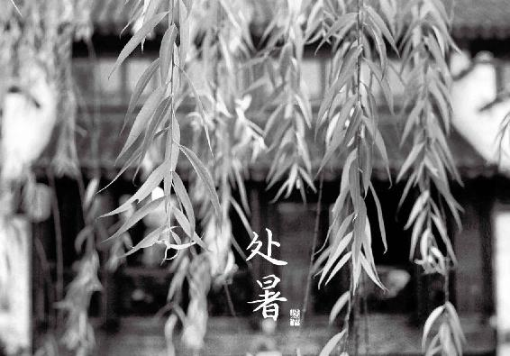

1.立秋时节，“睡起秋色无觅处”“一宿秋风未觉凉”
一年有四立—立春、立夏、立秋、立冬，分别代表一个季节的开始。在四立之中，立秋所代表的换季最容易被人忽视。每年的立秋是在8月的7日到9日之间，那时候大部分地区天气依然很热。妈妈常说，立秋后还有二十四个秋老虎，意思是立秋后还会有二十多天炎热的天气。古人写立秋，也会感叹“睡起秋色无觅处”“一宿秋风未觉凉”，好像找不到秋天的感觉。
今天的人对立秋就更不敏感了。立秋后的八月，我们许多人还习惯照着夏天的活法过日子，喝冷饮，吹空调，吃冰西瓜……等到九、十月天气渐冷，毛病就出来了，有人拉肚子，有人咳嗽，有人发胖，有人感觉身上没力气。这都是“秋行夏令”的结果。
其实，立秋时不论身上感受到的气温如何，天地之气已经转换了，而且向我们露出了端倪。如果您总待在房里，不容易体会到这一点。而喜欢自然生活的人都会发现，立秋那天，一般会刮点风，跟夏季的热风不一样，它是带着些许凉意的。这是立秋给我们的重要信号—凉风起，是天地阳气渐收的表现。从此时开始，早晚的温差就慢慢变大了。
北方地区有民俗：立秋日，小孩子一天不许喝凉水，这样到冬天不容易咳嗽。其实就是在说，秋天到了，别再吃寒湿的东西，免得伤了脾，脾湿则生痰湿，从而引起咳嗽。《黄帝内经》里有一句“秋伤于湿，冬必咳嗽”，说的是同样的道理。因为我们的身体随着季节的转换，已然悄悄地在变。您的阳气要开始往回收了，饮食也要随之调整。
怎么调整呢？请注意这三点：
（1）秋不食瓜。这个瓜指的是西瓜。西瓜是夏天的水果，现在要少吃了。立秋后大量吃西瓜，很伤脾，容易引发秋季的慢性腹泻，或是腹部发胖。
（2）吃应季的酸味水果，如桃子、葡萄，可护肝养血。
（3）减少凉菜，增加热菜。饮食中油和蛋白质的比例要适当增加了，不宜再像夏天那样清淡。
立秋之后的一个月，是初秋，养生的重点在哪呢？四个字：补气祛湿。
立秋之后的一段时间，是中医所说的“长夏”，这个时候会出现一个特别影响您健康的现象，叫作“湿气及体”—空气中的湿气往下走侵袭人体，而人体内原有的湿气也不容易排出，反而有蓄积往下走的趋势。湿邪一旦在人体盘踞下来，就会“恋恋”不去，很难清除。所以这时您要抓紧祛湿。祛湿需要能量—人体的“气”。但刚从一个夏天的暑热中脱身，我们的气多少有点亏虚，所以这时候要想法补一补，给身体加油。
从立秋到处暑，是初秋的前半个月，这15天的重点是补脾气，祛脾湿。
从处暑到白露，是初秋的后半个月，这15天的重点是补脾兼补肾气，清利下焦湿气。
2.为什么会秋乏？为什么立秋要贴秋膘
老年人常说一句话：“春困秋乏夏打盹，睡不醒的冬三月。”好像说这个人特别懒，一年四季都睡不醒的样子。实际上春困和秋乏是两个概念，原因是不一样的，表现也不同。
春天那种困，困在午后，是感觉一到下午的时候，人就困了，特别想眯一会儿。而秋天的乏是什么呢？乏在清晨，早上不太想起床，醒了还想睡，睡不够，浑身有点无力。
秋乏是两个原因造成的。第一，秋季晚上的时间越来越长了，而夏天的夜晚很短，那时我们睡得相对少一点。如果到了秋天，一时没调过来，还继续夏天的作息，睡得不够，早上醒来就会乏。第二，夏天我们的血液都往体表涌，秋天一到，天气一凉，骤然一冷，毛孔收缩，血就往体内回流，其实血是去脏腑里工作了，这时候你会觉得乏。这种乏是夏天“虚”带来的一个后遗症。老话讲，“一夏无病三分虚”。当人虚了以后，自然就会觉得无力—中医叫气虚无力。
秋乏，应该说是人到秋天时的一种正常生理现象。
那面对这种秋乏，有什么样的方式可以提神呢？其实，等您感觉到秋乏的时候，要想调节已经晚了些。
应该什么时候调节呢？从立秋就要开始调节。立秋有一个老话叫什么？贴秋膘！
为什么要贴秋膘呢？其实就是给我们的人体补气、补能量。如果立秋时把秋膘给贴好了，秋天就不容易乏。
贴秋膘有很多讲究，北方人一般吃饺子，而南方人讲究煲肉汤。其实，不管吃什么，最重要就是要增加蛋白质和油脂的摄入量，那样就把膘给贴上了。贴秋膘其实不是说真的让我们长胖，关键补的是一个气。在《回家吃饭的智慧》中，给大家推荐过一个十全大补酒糟鸡，适合体质虚弱的人用来贴秋膘。

守护： 我病后和虚亏时就会吃上一至两周“十全大补酒糟鸡”，不但味道好，还觉得有力气了。
络：这几天回老家，做十全大补汤给爷爷喝，爷爷一直赞叹好吃。感恩陈允斌老师，家常便饭，吃出健康。
3.立秋时节的食方：补气黄芪粥黄芪粥，给身体补充正能量很快
立秋时必须得补一补，冬天才好过，不容易怕冷，也不容易生病。体虚瘦弱的人，可以吃十全大补酒糟鸡。其他的人呢，也最好吃些补气的食物来帮帮辛苦一夏的身体。
立秋之日还在三伏天之中，以前推荐大家在三伏天补气用的黄芪粥，这时一定要喝。
黄芪，有点偏温性，有时会让人上火。但唯独在三伏天和立秋后的长夏，大多数人都可以用，这是唯一一个可以放心用黄芪的好时候。在其他的季节，您还真的要斟酌一下自己的体质，气虚的人用比较合适，而阴虚有内热的人就要谨慎。
立秋时用黄芪，配上大米煮粥是最好的。大米也是补气的，可以增强黄芪的补益作用，效果比直接喝黄芪水要好。黄芪煮粥味道也不错，有淡淡的甘味和豆浆的香味，全家人都能喝。黄芪粥虽然带甜味，对糖尿病人却很适宜，还有降血糖的作用。
补气黄芪粥做法一
原料：黄芪 300克、大米 500克（2人份5天用量）。
做法：
① 将黄芪加10 ~ 15杯（普通的马克杯一杯水约300毫升）清水浸泡30分钟，连水一起烧开，中火煮30分钟，将药汁滗出备用。
② 再加等量的清水烧开后煮15分钟，再次滗出药汁。
③ 重复第二步的过程。
④ 将煮过的黄芪药渣捞出扔掉。将三次煮过的药汁混合，放入冰箱保存。
⑤ 每天早上取1/5的黄芪水，加入100克大米，加适量水煮成稀粥即成。
补气黄芪粥做法二（懒人做法）
原料： 黄芪（柳叶片） 60克、大米 100克（2人份1天用量）。
做法：
① 黄芪柳叶片用清水浸泡一晚。
② 加100克大米一起煮成稀粥。
③ 食用时将黄芪药渣捞出不要。
功效
① 扩张血管，降血压，防治中风和高血压。
② 固表止汗，增强抵抗力，预防感冒。
③ 促使皮肤疮疡中的脓毒排出。
④ 促进手术后伤口的愈合。
⑤ 健脾益气，适合慢性病（高血压、糖尿病、慢性肾炎等）体虚的人进补，以及大病初愈的人调养。
⑥ 调理气虚型肥胖（一动就爱出汗，上楼气喘吁吁，腹部虽然胖但一按能按下去，肉是松软的）。
允斌叮嘱
感冒、咳嗽痰多不可喝黄芪粥，否则易将病邪封在体内不能宣泄出去。凡是外感病邪，有急性症状时都不宜补，而是应该吃发散的食物，比如风寒感冒时喝姜汤将表邪发散掉。
黄芪晒干后会切成不同形状，整根的黄芪必须三煎三煮，现在药店出售的多为柳叶片，即斜着切成的薄片，这样直接煮在粥里很方便。
怎样挑选好的黄芪
（1）闻：优质、新鲜的黄芪，有一股浓郁的豆香味。陈旧的黄芪闻不到什么味道。
（2）尝：黄芪是可以生嚼着吃的。取一片放嘴里尝一尝，好的黄芪味道甘甜。如果有酸味、怪味，是熏过硫黄的。
（3）看：黄芪是植物的根部，表皮偏褐色，里边发黄。外圈发黑的有可能发霉了。切片的黄芪，不是越大越好。有一种特别宽的黄芪片，薄薄的，外形很好看，价格也贵，是普通黄芪用机器压扁拼接而成的。因为薄，所以用来泡茶喝比较容易出味。如果在家炖煮，就没有必要买这种了。
（4）产地：直接从产地购买（比如通过网络购买）更有机会买到优质、新鲜的黄芪。黄芪的产地主要在西北和东北。我个人比较偏好产于甘肃的黄芪。

银蕊：三伏天的黄芪粥，喝过后，身体有劲儿了，去年一冬天没有咳嗽。
平安：黄芪对我来说特别合适，一直不知道自己气虚，后果很严重，月经不正常，最后上手术台。你的读者给我介绍黄芪，用后我慢慢恢复。一年后，我已经能干以前的体力活，人也慢慢变瘦。感谢老师！
简单：这个效果真的特别好，补气生血。原来体质差，特别爱感冒，吃了一段时间，感冒少了，人精神好了。最开心的是，脸上的斑点淡了很多，皮肤也白了。
Lucy：按老师说的时间段吃了补气黄芪粥，那个夏天之后，觉得自己气足了。特别明显的表现是说话声音大了，妈妈还开玩笑说我打喷嚏声音都洪亮了。
小巧玲珑：感觉神仙姜枣茶、补气黄芪粥对我的寒湿体质效果特别好！顺时吃，整个人感觉很舒服、很有劲，说话中气也很足。以后到节气，我延长时间吃久点！
心本无尘问：入伏开始早上喝黄芪粥，下午可以喝荷叶水或荷叶粥吗？
允斌答：可以的。
英子问：这么多年来，小女的每次感冒、发烧都是采用老师的药方，药到病除！ 请问老师，30克黄芪煮粥是一家人的量吗？12岁女孩能喝吗？怀孕5个月的孕妇能喝吗？这些年来，托老师的福按季养生，身体好多了，气色也好了，感谢老师！
允斌答：是否能喝要根据具体身体情况，可以对照《回家吃饭的智慧》中讲黄芪的适合与不适合的详细内容来判断。
清梅傲雪问：请问老师这粥需要吃多长时间？谢谢！
允斌答：吃到三伏结束。
逍遥侠问：陈老师，您说黄芪要三煎三煮，我可否直接熬2小时，效果一样吗？
允斌答：不一样。
云淡风轻问：陈老师，我是阴虚体质，三伏天吃黄芪粥会上火吗？
允斌答：如果阴虚火旺，就没有必要吃黄芪。
禾惠问：陈老师，我买的黄芪已打好粉，是否粥煮好前放进去？效果和三煎三煮一样吗？
允斌答：黄芪粉可以和粥一起煮。
荧婧问：陈老师好！请问黄芪水可以用来煲五谷杂粮粥吗？
允斌答：可以的。
海风飘飘问：陈老师，我怀孕7个月，每天都坚持喝姜枣水，最近牙痛还要继续喝吗？马上要进入三伏天了，准备喝黄芪，请问我可以喝吗？
允斌答：不喝。下个月你可以喝豆浆煮鸭蛋。
初见问：老师，产后可以喝黄芪煮水或者黄芪粥吗？
允斌答：可以的。
浅尝幸福问：陈老师在推荐的黄芪粥中说风寒感冒不能吃，想问陈老师风热感冒能吃吗？
允斌答：也不能。
女科汪蛋老羞俩好问：我买了您的书，看到有些同样的药功效不一样。那么是用炙黄芪还是普通的黄芪呢？
允斌答：普通黄芪。
Evawang问：陈老师，我是过敏体质，长期气血不足，湿疹经常发作，奇痒难忍，有什么办法调理吗？本来特别怕冷，夏天甚至怕吹空调，三伏天坚持喝黄芪粥后明显改善了。但是您在书上说，湿热体质不适合吃银耳，又说银耳可以调理皮肤干燥，就我的情况来看该不该吃？
允斌答：你不是湿热而是寒湿。继续坚持喝黄芪，可以加大剂量，煮水喝。

每年的8月23日左右交处暑节气。处暑，意味着暑气到此而止。此时晚上出门散步，凉风习习，拂在身上非常惬意，堪称 “新凉值万金”。
此时虽天气渐渐干爽，秋意已有，但夏季的湿气还未全消，还需用饮食彻底送走盘踞在人体下焦顽固的湿气，所以我们不仅要补脾气，还要补足肾气。
4.处暑时节，暑湿犹在，“新凉值万金”
立秋后到出伏之前，暑气压制着秋气。出了三伏天，到了处暑的时候，秋气开始驱散暑气。秋天的感觉慢慢来了。处暑，意味着暑气到此而止。
每年的8月23日左右交处暑节气。在此前后，也是出伏的日子。此时晚上出门散步，凉风习习，拂在身上非常惬意，古人特别珍惜这种感受，赞之为“新凉值万金”。
此时虽天气渐渐干爽，秋意已有，但夏季的湿气还未全消，古人对此观察得很细致：“湿土之令，始于大暑，终于白露。”在白露之前，湿气还在。因此不要急着去补阴，还需用饮食彻底送走暑湿。
湿是水的一种，特点是往低处流。人体内的湿气也是如此，而且以下焦为重。盘踞在人体下焦的湿气是最顽固的，很难清除。肾主水，又是下焦的主脏，补好肾气，才能更好地清利下焦的湿气。
从处暑到白露，是初秋的后半个月。这两周的养生重点仍然在于补气祛湿。但与初秋的前半个月有区别的是，此时不仅要补脾气，还要补足肾气，祛湿的重点是在下焦。
5.处暑时节的食方：出伏送暑补肾汤
处暑的时候，可以喝一道“出伏送暑补肾汤”。这道汤是纯素的，补养的效果却很好，既可以清热利湿、补益肾气，调理下焦湿热、小便异常、白带，又能补肾健脾，很适合处暑到白露这两周的天气。
出伏送暑补肾汤
原料：豆腐1块、豇豆角1把、空心菜1把、胡椒粉、油、盐。
做法：
① 豆腐切小方块，豇豆角切约2寸长的段，空心菜取嫩茎叶。
② 锅内放清水，水开后放少许盐和植物油，加入豆腐和豇豆角煮熟。
③ 豇豆角熟透后，加入空心菜，不要盖锅盖。
④ 待锅内汤再次沸腾后，撒胡椒粉起锅。
允斌叮嘱
① 在这道汤里，豇豆角和空心菜是主角，不要轻易替换成别的蔬菜。豇豆角是少数可以补肾气的蔬菜之一。而空心菜有打通人体水液输送的通道，促使多余水湿从小便处排出的作用。
② 出伏送暑补肾汤口感很清甜，幼儿和孕妇也可以喝，全家老小都适宜。如果你喝了觉得很对自己的胃口，一周两三次甚至天天喝，继续喝下去直到应季的豇豆角下市为止都没问题。
③ 应季的新鲜豇豆角下市买不到了，可以换成泡豇豆角。这样，汤的味道会从清甜变成微酸，更适合紧随其后的深秋时光，效果也会有些微的变化，除了原有的补肾功能，还增加了养肝的好处。
处暑到白露，还不是吃萝卜的时候
要注意，这个时候还不到吃萝卜的季节。夏天的虚没有完全补好之前，不适宜散气。萝卜、陈皮这些理气的食物，现在还不适合多吃。如果夏天晒黑了，这时不妨每天晚上喝杯柠檬蜂蜜水，帮助恢复白皙的肤色。
运城米米：我觉得出伏送暑补肾汤效果很好，口感清淡美味。

乐悠悠问：允斌老师，新鲜豇豆和泡豇豆各有其效，那能否同时放？
允斌答：可以的。
Li问：感谢老师温馨提示，产妇能喝这道汤吗？谢谢老师。
允斌答：可以的。